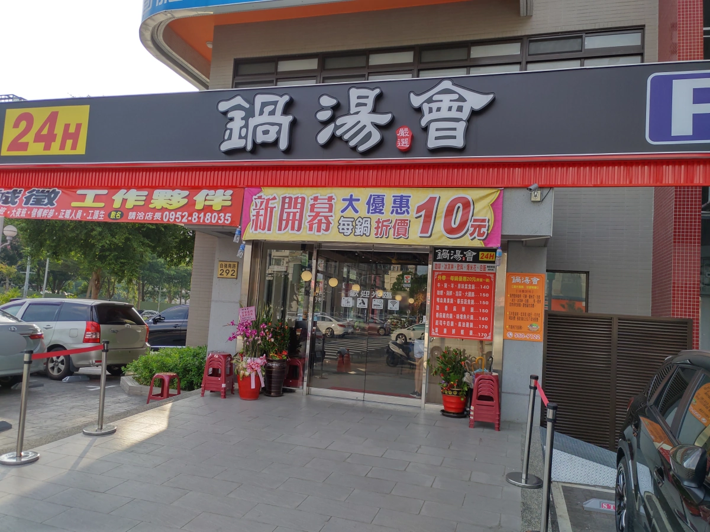
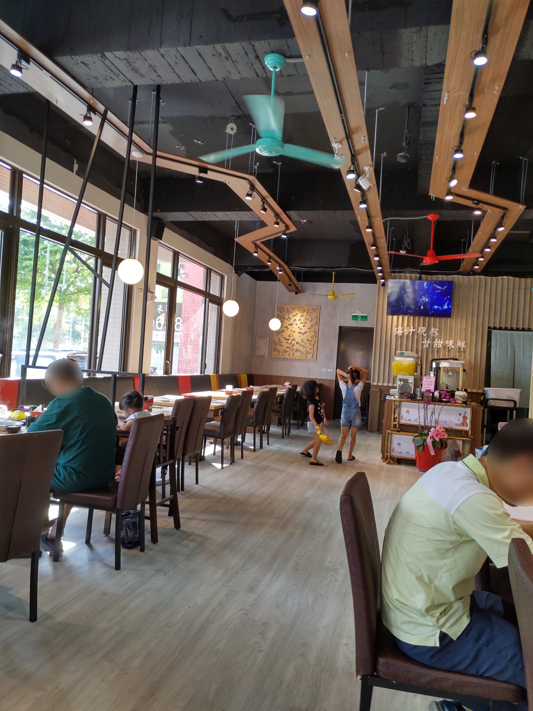
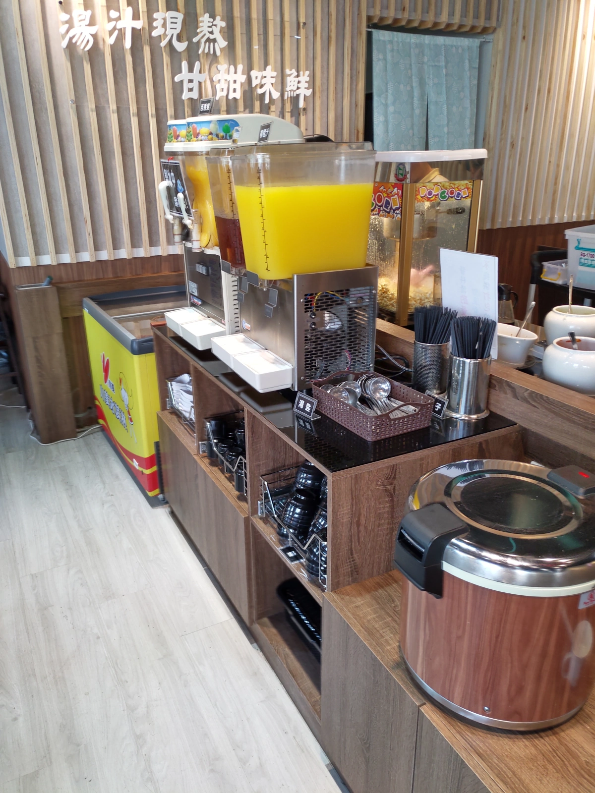
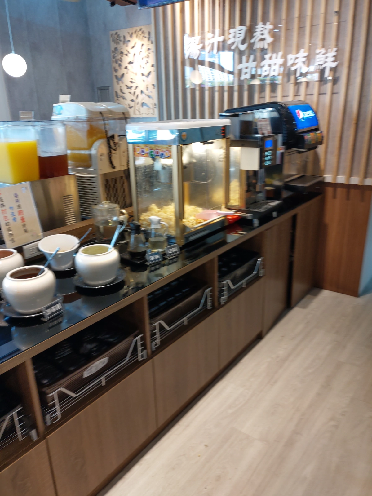
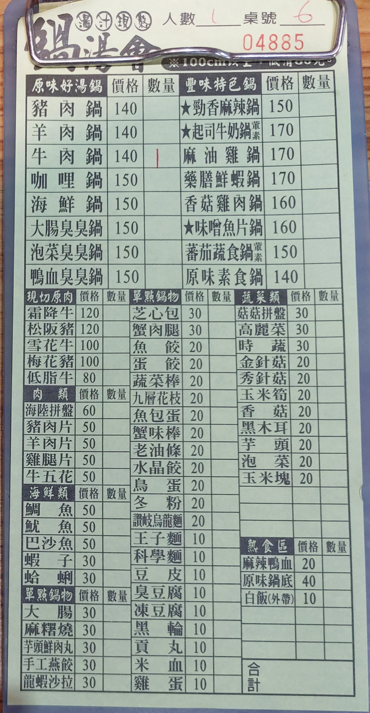
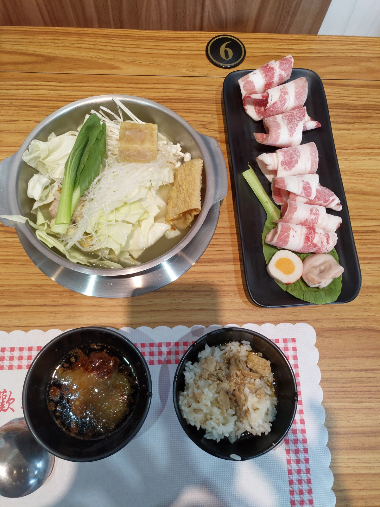

[竹北] 鍋湯會24h - 竹北店
| 餐廳名稱: | 鍋湯會24h - 竹北店 |
|---|---|
| 地 址: | 新竹縣竹北市自強南路292號 |
| 營業時間: | 24h |
| 電 話: | 03 550 9122 |
每個人口袋裡都要有幾間 24小時營業的店，以免假日作息不正常時，在不正常的時間也能解決一餐。 以前竹北八方飯店也曾經宣稱24小時營業，後來它也是算了。鍋湯會24h 剛開幕， 在這個重要路口經營24小時營業火鍋，也許能成，因為火鍋店只要有一位厲害廚師負責湯頭， 一位採購。剩下的事，工讀生都能做。不過也因為低門檻，竹北最近好多火鍋店。
今天睡到自然醒，胡亂吃點東西，再感覺餓，已經 15:50 了，想到這家鍋湯會24h， 來踩雷看看，門口一堆停車位當中，有4個是屬於店家的。我冷門時段來，自然是 停到了，一進去，竟然還有幾組客人，不過後來才知道是一部分是員工在用餐。
大門口，這個路口車流量大，廣告效果應該不錯，我就是這樣被吸引來的。 
裡面稍微狹長型，還算寬敞。 
這邊很棒的就是有個免費的沙拉吧，點個火鍋，就有飯、果汁、汽水、冰淇淋可以吃到飽。 這一側有小美冰淇淋，也算知名大廠，吃了還不錯。柳橙汁想也知道是還原果汁，正常。 麥茶應該是自己製作的了吧，正常，沒放糖，不錯喝。還有白飯、餐具等。  這一側不容易掌握沒人的時候，迅速照一下，沒注意到照糊了。最裡面是 百事可樂，以及同公司 的一些飲料，如檸檬茶等。然後是咖啡機，今天晚了，就沒喝咖啡了。爆米花是甜的，唉，我看電影 是只吃鹹爆米花的，其他場合才偶而吃甜爆米花的。還有火鍋醬料、醬料碟等。 最外面有一鍋滷汁沒照到，牌子寫 特製香草滷汁，那是讓客人淋在白飯吃的，滷汁的底部還是有一些小肉片， 算是提供一個類似滷肉飯的食物。 
今天是踩雷，先點個安全牌，牛肉鍋就好了，定價140元，結果開幕期間，只收130元。 
這家直接將菜盤丟進鍋裡送上來，因為沒有菜盤，所以肉盤還放一片青菜，一個魚餃，一個魚卵捲。這樣桌面倒也清爽，不會擺一堆盤子，不錯。  湯頭好喝，牆壁上寫著湯汁現熬，姑且相信他不是用什麼粉速成的。其他的食材，好像也很正常， 醬料也很正常。 140元，沒什麼好挑的了，沙拉吧還提供有品牌的小美冰淇淋、百事可樂，其他 的食物也有用心。真是冷門時段的好夥伴。